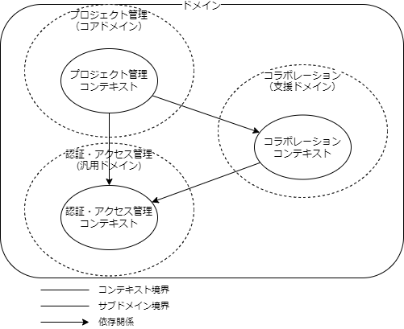

ドメイン駆動設計（戦略的設計）
筆者: 海老原 賢次（ebi311@gmail.com）
作成日: 2022-05-18
更新履歴:
- 2022-05-18: 新規作成
ソフトウェアを開発するときには、要件定義を行いユーザーの行ってい業務についてあれこれヒヤリングや調査を行います。 それは、いわばユーザーの業務についての知識を学習している、とも言えます。ソフトウェア開発とは、その知識をコードに落とし込む作業、ということになります。
その方法を誤ってしまうと、メンテナンス性が悪いばかりではなく、ユーザーが心に求めていることを外してしまう可能性があります。
ドメイン駆動設計(Domain Driven Design -> DDD)は、その知識をコードに落とし込む作業のガイドを示したものです。
なぜ今ドメイン駆動設計か
ドメイン駆動設計が提唱されたのは2003年頃です。ITという分野の進化は目覚ましく、最新の技術も十年過ぎれば陳腐化してしまうといったことは往々にして発生します。にもかかわらず昨今のシステム開発の現場において、ドメイン駆動設計という言葉を耳にする機会が増えたのには、いったいどのような背景があるのでしょうか。
ひと昔前はサービスをいち早く世に出すことこそがもっとも重要なこととされていたように感じます。そのためモデリングに重きを置き、開発の最初期にコストを支払うドメイン駆動設計は重厚で鈍重なものであると誤解され、敬遠されていました。
とにかく早くサービスを打ち出すことはほとんどミサイルのような片道ロケットに乗ることに似ています。打ち上げた後に帰ってこれないという欠点に目を瞑れば、システム開発の過酷な生存競争に勝つために取れる最良の選択肢でしょう。それに対してモデリングをしっかりと行い、長期的な運用を視野に入れた設計手法は飛行機に運用するようなことです。飛行機は片道ロケットと違って往復することは可能ですが、その速度は圧倒的に見劣りします。それにもかかわらず、なぜ私たちは片道ロケットの打ち上げ競争を辞めて、飛行機を安定運用したいと願うようになったのでしょうか。
ソフトウェアは変化するものです。ごく最初期の局所的な開発速度を優先したソフトウェアは、柔軟性に乏しく、変化を吸収しきれません。ソフトウェアに求められる変化に対応するために、開発者は継ぎはぎのような修正を重ねます。数年もすればソフトウェアは複雑怪奇な進化を遂げるでしょう。それでも時代の変化についていくために、開発者は辟易しながら継ぎはぎだらけの修正を積み重ねるのです。場当たり的な対応に嫌気の差した開発者たちが片道ロケットの打ち上げ競争ではなく、飛行機の安定運用を願うようになるのも想像に難くありません。救いを求めて手にしたものの中にドメイン駆動設計がありました。
ドメイン駆動設計はドメインと向き合うことで分析から設計、そして開発までが相互作用的に影響し合うよう努力を重ねることを求めます。ソフトウェアを構築する最初期においても一定の効果はありますが、その真価は変化に対応するときにこそ表れます。ドメイン駆動設計を取り入れてみた当時はさほど効果が見られなかったでしょう。ときが流れ、段々とドメイン駆動設計が認められてきたのは、偉大なる先人たちによって撒かれた種が芽吹いてきたからに他なりません。
プログラムは動かすだけなら簡単で、しかし動かし続けることは難しい代物です。システムを長期的に運用したいと願うのならば、安定的な飛行機の運用を願うのならば、ドメイン駆動設計をいまこそ学ぶべきでしょう。
成瀬 允宣. ドメイン駆動設計入門 ボトムアップでわかる！ドメイン駆動設計の基本 (pp.42-43). 株式会社翔泳社. Kindle 版.
原典と書籍と参考情報
ドメイン駆動設計は、Eric Evans によって2003年（なんとおおよそ20年前！）に発行された「Domain-Driven Design」によって世の中に知られるようになりました。8年たった後2011年（それでもおおよそ10年前!）にようやく日本語版が発行され、日本でも注目をあつめるようになりました。
しかし、それでも内容は難解であまり採用されることが多くなかったと思います。
最近では、わかりやすく解説した書籍も出回っており、Webでも多くの情報が出回るようになり、比較的学習しやすくなってきました。
皆さんには、下記書籍を読んでいただきたいのですが、量が多く理解しながら読むと非常に時間がかかります。
ここでは、下記書籍からコアなものをピックアップして、著者なりに噛み砕いな内容をご紹介します。後に書籍を読むことで理解が深まると思いますので、ぜひ書籍の方も読んでいただきたいです。
- Domain-Driven Design - Eric Evans : DDDの原著にして全て。通称「エヴァンス本」「DDDの原典」
- エリック・エヴァンスのドメイン駆動設計 : 「エヴァンス本」の日本語訳版
- 実践ドメイン駆動設計 : エヴァンス本を元に、より実践に近い具体的な例をもとに解説をした書籍
- ドメイン駆動設計入門 ボトムアップでわかる! ドメイン駆動設計の基本 : エヴァンス本の戦術的設計に絞って、且つ上よりもよりさらに実装に近い解説をした書籍 分かり易いが全てではない。タイトル通りの入門書。
DDDを本気で学習するのであれば、原典であるエヴァンス本から読むのが当たり前なのかもしれませんが、かなり抽象的な言葉で書かれており、理解が難しいです。
そのため、上のリストの本を下から読むことをおすすめします(もちろんエヴァンス本は日本語のもので良いです)。ただし、一番下のものだけ読んで理解したつもりにならないようにしましょう。色々なエッセンス、特に戦略的設計についてはあまり書かれていないので、「実践ドメイン駆動設計」とできれば「エヴァンス本」も読んでおきましょう。（エヴァンス本は必須という人も多いです・・・）
Note
エヴァンス本は、紙の本より電子版をおすすめします。紙の本は厚くてやる気が萎えますが、電子版なら精神的にちょっと楽です。
その他の参考にした情報
- 「ドメイン駆動設計」のススメ~100 日でエヴァンス本を完読したしょぼちむとふりかえる ~AWS Developer Live Show - YouTube
- ドメイン駆動設計は何を解決しようとしているのか[DDD] - Qiita
- ドメイン駆動設計とは何なのか？ ユーザーの業務知識をコードで表現する開発手法について：CodeZine（コードジン）
Note
エヴァンス本は、なかなか難解な記述がされており、頑張って解読しました。解釈が違うのではないか、という方もいらっしゃると思います。
いろいろな方の意見も聞きたいので、ご意見がある方はお気軽にお問い合わせください。> ebi311@gmail.com
「ドメイン」の「知識に焦点を当てた」設計手法
DDDを一言で表すと、「ドメイン」の「知識に焦点を当てた」設計手法です。
これだけだと分かりづらいので、補足しましょう。
まず、「ドメイン」とはなにか、です。これは、「ソフトウェアがプログラムを適用する対象となる領域」となります。重要なのは、そのドメインがなにか、ではなく、そのドメインに「含まれるもの」は何か、というところです。その「含まれるもの」によって領域が決まります。
例えば、会計システムでは銀行口座や貸借対照表などといったものが対象になるでしょう。物流システムにおいては、倉庫や物品、トラック、輸送経路などが対象になるかもしれません。
Note
それぞれのドメインでは、そのソフトウェアで取り扱うものだけを含めることになるので、会計関連のシステムだからといって、必ず現金や銀行口座の要素が含まれる、というわけではありません。
このようにドメインに含まれるものは、そのソフトウェアが対象とする領域によって全く異なってきます。
次に「知識に焦点を当てる」ということについてです。
ソフトウェアには必ず利用者が存在しますが、利用する目的としてはその利用者が抱えている問題を解消するためです。その問題を正確に理解し、解決方法を導くには、 そのドメインに向き合う必要があります。これが「知識に焦点を当てる」ことです。
そして、開発者はそのドメインのことをよく知りません。その対象の業務のことをわかっている人＝ドメインエキスパートに、話をきいて業務を理解するところから始めます。
当たり前のことを言っているようですが、つい UI に注目してそこから設計が始まってしまったり、AIといった最新技術ありきで話が進んでしまったりすることが多いのではないでしょうか。そうなると、真に解決したい問題から離れてしまうでしょう。
また、ドメインエキスパートもまた、開発者の話を聞いて自分の業務を整理する必要があります。それが業務の改善につながることにもなります。
DDDは、そういった当たり前のことを当たり前にできるような設計手法なのです。
DDD を採用する動機
DDD は、全体を俯瞰すると要件定義から詳細設計まで広範囲に渡るため、ハードルが低いとは言えないかもしれません。ただ、正しく用いることができれば大きな効果が期待できます。
DDDを採用するためのモチベーションをあなたやチームのメンバーに理解して貰う必要があります。
サービスの素早い提供 vs 長期のメンテナンス
昨今では、サービスを素早く提供することに重きが置かれます。そうすると、このドキュメントに書かれていることは、重厚で無駄に思われる方もいるかも知れません。
しかし一方で、一旦世に出たサービスが人気となり、長期にわたりメンテナンスする必要が出て来ることもあります。その過程でも、素早いアップデートが求められます。
初期のリリースで、速さを求めて十分な設計やテストが無い場合、リリース後のアップデートが指数関数的に重くなってきてしまします。
結果的に、コストが大きくなり、利用者の満足も得られなくなるでしょう。更に重要なのは、セキュリティ上の不具合も出てくると致命的です。
そうならないためには、十分な設計とそれができる知識が必要になります。
ファースト・リリースの速度が必要な場合は、まずは速度を重視した実装を行っても良いでしょう。ただし、後に設計を見直したり、アプリケーションを作り直したりする計画を必ず入れてください。 そのことを、プロダクトオーナーに理解してもらうことが必要です。
いずれにしても、素早いリリースが求められるから、設計の知識や配慮は必要ない、ということにはなりません。
設計に対する十分な知識があり、そこから必要に合わせて妥協して崩す、ということが必要です。
引用: 成瀬 允宣. ドメイン駆動設計入門 ボトムアップでわかる！ドメイン駆動設計の基本 (p.42). 株式会社翔泳社. Kindle 版.
ひと昔前はサービスをいち早く世に出すことこそがもっとも重要なこととされていたように感じます。そのためモデリングに重きを置き、開発の最初期にコストを支払うドメイン駆動設計は重厚で鈍重なものであると誤解され、敬遠されていました。
(中略)
ソフトウェアは変化するものです。ごく最初期の局所的な開発速度を優先したソフトウェアは、柔軟性に乏しく、変化を吸収しきれません。ソフトウェアに求められる変化に対応するために、開発者は継ぎはぎのような修正を重ねます。数年もすればソフトウェアは複雑怪奇な進化を遂げるでしょう。
それでも時代の変化についていくために、開発者は辟易しながら継ぎはぎだらけの修正を積み重ねるのです。場当たり的な対応に嫌気の差した開発者たちが片道ロケットの打ち上げ競争ではなく、飛行機の安定運用を願うようになるのも想像に難くありません。救いを求めて手にしたものの中にドメイン駆動設計がありました。
DDD のメリット
DDDを採用するメリットとしては、下記の様なものがあります。多くの場合にそのメリットを享受できるでしょう。
- ドメインエキスパートと開発者がチームとして活動することで、本当に必要なものを効率的に開発することができます。
- ドメインエキスパートは、現在の事業・業務を整理しより深い理解ができます。
- アジャイルでイテレーティブな開発を継続できるシステムを獲得できます。
- サービス指向アーキテクチャやビジネス駆動アーキテクチャを実現しやすい。
- テストしやすい、バグの混入を低く抑えられる、スケーラブルなシステムが構築しやすい。
DDDはツール的なものではなく、ガイドラインに近いものなので導入したからOK、というものではなく、その意図や意味をしっかり把握して運用することで、上記メリットを得られるようになります。
逆説的ですが、上のメリットを意識しながら開発を運用していくことにもなります。
DDD を採用する基準
DDD はある程度のシステム規模で効果を発揮します。下記のようなシステムには向かないかもしれません。
- 単純なCRUDのみで、データベースのUIツールに近いものである。
- ユースケースがおおよそ20以下のシンプルな要件で、将来複雑になる、または随時更新されることが想定されない。
- 市販などのツールを使うだけで解決する要件のものである。
機能の提供が最も重要で、且つ規模も小さいのであれば、DDDを採用するよりもさっさとコードを書いてしまったほうがいい場合もあります。 その場合でも、システムの規模が大きくなることが想定されるのであれば、早い段階で DDD を採用しスクラッチビルドを想定した計画としておくようにします。もちろんそれをドメインエキスパートが理解しておく必要があります。
ドメイン、サブドメイン、コンテキスト
山を登るとき、はじめに見るものは目の前の道ではなく、ゴールまでの道のりを地図で確認します。いくら性能の良い靴や道具を持っていても、全体の工程を把握していないと、安全な山登りはできないでしょう。
DDDでシステム開発をする場合、システム全体を俯瞰した「戦略的設計」と、論理アーキテクチャから設計に関する「戦術的設計」を理解しておく必要があります。
戦略的設計では、業務を分析して区分をするところから始めます。ここでは、「ドメイン」「サブドメイン」「コンテキスト」の区分を考えます。これらはシステムの構成を意味するのではなく、利用者が置かれている状況を整理し可視化するために行う作業です。
ドメイン
ドメインは、ソフトウェアがプログラムを適用する対象となる領域なのですが、1つの業務が範囲の場合もありますが、ものによっては事業全体を指し示すこともあります。
例えば、SaaSを提供していたとした場合、その SaaS の事業自体がドメインとなります。
ドメインが大きくなると、1つの大きなまとまりで把握したり管理するのは困難です。それぞれの業務で区分する必要があります。また、その業務同士で連携することもありますが、その中で使われる言葉はそれぞれ独立したものもあります。
ドメインには、問題空間と解決空間があります。
上記の業務上の区分を問題空間としてサブドメイン、それを具体的に解決する区分を解決空間としてコンテキストを定義します。
わかりにくいと思うので、それぞれ解説します。
サブドメイン
サブドメインは、解決したいビジネス上の問題や関心事を定義します。
例えば、ECサイト全体をドメインとした場合、注文以外に在庫管理、請求管理等といった業務が必要になるでしょう。そういった大きな業務単位をサブドメインとして定義することで、管理する対象をシンプルに保つことができます。
そのような業務の単位、として捉えると近いと思います。
ドメインの最も重要となるドメインをコアドメインとして、そこにリソースを多く投入するなどの目的とします。 その他のサブドメインを支援ドメイン、汎用ドメインとして定義しますが、コアドメインかどうかが重要ですので、ここでは詳細を省きます。
これは、要件定義によって必要な業務を洗い出すときに定義するものとなります。
コンテキストの境界
コンテキストは、課題に対する解決する領域です。DDDでは用語(後述するユビキタス言語)の境界にもなります。
1つのサブドメイン毎に1つのコンテキストがあるのが理想ですが、サブドメイン間の連携のために、コンテキストが複数のサブドメインをまたぐ場合もあります。
上のECサイトの例で、顧客という用語を考えたときに、ブラウザでカタログを見ているときの「顧客」と注文時の「顧客」では意味が異なります。
なぜならカタログを見る、という領域では、顧客は事業として顧客を集める対象、または割引の対象であるか、おすすめを表示するための情報での扱いです。つまり特定の人ではない、やや抽象的な存在です。請求時では明確に、その人の名前や住所、支払方法などの情報を持ったものになります。
このように、ドメイン全体での領域で「顧客」というのは明確な定義が難しいです。
注文機能1つとっても、それぞれの機能には大きな違いがあります。これらは「カタログ参照」と「注文管理」にコンテキスト（サブドメインも）を分離したほうが良いでしょう。
Info
「実践ドメイン駆動設計」の本の「第2章 ドメイン、サブドメイン、境界づけられたコンテキスト」で紹介されているコンテキストの分割の例をここで紹介しておきます。
- あるプロジェクトでは、開発プロジェクトのタスクを管理するSaaSサービスの開発を行っていた。
- そのサービスにコレボレーションの機能として、フォーラムやディスカッション、カレンダーなどの機能をコンテキストとして実装されていた。
- 認可の処理をロールベースに変更しようとしたら、影響範囲が大きすぎて混乱することとなった。
- このコンテキストには、ユーザーの情報やその権限が含まれていた。
- 権限について、このコンテキストの中でユーザーが認証を受けているか、アクティベートされているかなどをチェックしていた。この処理自体もこのコンテキストで行うべきではなく、「認証が取れていて有効である」ことと、「ロール」が何かがわかれば良いはずであった。
- そもそも、コレボレーションには「ユーザー」が必要なのではなく、「投稿者」や「モデレーター」というもののはず。「ユーザー」が本質をついたものではなく、ユビキタス言語にもないものであった。
- コンテキストでは、ユーザーを保持するのではなく、外部から投稿者などの情報を渡されるようにした。
- 引数が、「ユーザー」ではなく、明示的に「投稿者」であることが重要。
- 権限のそのコンテキストの中でユーザーから権限情報を取得しチェックしていたが、ロールを渡されるようにした。
- ここでも、アクションごとの何をするためのロールかを渡されるようにした。
- ユーザーや権限、ロールの管理を「認証・アクセスコンテキスト」として別のコンテキストとして切り出した。

ユビキタス言語
コンテキストは、それが1つの名前空間となります。その中だけで通用する共通言語を「ユビキタス言語」といいます。
用語、と置き換えてもいいですが、単語だけでなく、アクションやイベントの名前も含まれます。
ユビキタス言語は、開発者だけでなく、ドメインエキスパートや関係者全員で共通のもので、その言葉で話をするようにします。
ですので、ユビキタス言語は全員で作り上げていってください。要件定義で全てを正しく定義しておく必要もありません。それはおそらく無理です。開発中に追加、更新があるものと考１、その辞書を常に最新に保つことが必要です。
この言語は、設計書、コード中にも出てきます。例えば、文書の作成者を示すプロパティは、「user」ではなく「author」とします。もちろん、「author」と「creator」などと同じ意味で別の単語が出てこないようにします。（目的が違えばもちろんOKです。）
ユビキタス言語は、ユーザーが普段使っている言葉などを元にするのですが、それも統一されていたり別な意味が存在することも多々あります。要件定義の中で定義する作業が必要になります。
コンテキストが異なれば、同じものを指していても別の単語が割り当てられたり、同じ単語でも別のものを指すことがあります。コンテキスト内で統一されていることが大事です。
よくやりがちなのが、名前の頭にコンテキスト名をつけることです。これは冗長なのでやめましょう。（例：カタログ コンテキストで「カタログ商品」など）
まとめ
ここでは、DDDの概要と戦略的設計について学びました。
戦略的設計を意識せずに開発を進めると、複数の概念を１つの汎用的な概念に混ざってしまい、個々の概念で本来の役割がぼやけてしまい、煩雑な構造となってしまいます。
しかし、領域を正確に設定するのは難しいものです。メンバーがDDDに理解を持ち、話し合いながら進めて、場合によっては立ち返って修正することも必要です。